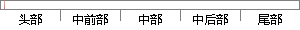

在提倡节约环保理念的同时我们更加希望构建一种区别于传统模式的新型的时尚的大学校园二手物品交易平台。
片段位置图

相似结果|
1
原句片段：在提倡节约环保理念的同时我们更加希望构建一种区别于传统模式的新型的时尚的大学校园二手物品交易平台。
相似片段 1：在提倡节约环保理念的同时我们更加希望构建一种区别于传统模式的新型的时尚的大学校园二手物品交易平台,实现实体交易与电子商务的有效结合。能够实现二手物品有效快速的...
|
※ 片段修改建议 ※
近似词参考：- 提倡：倡导 倡始 发起 首倡
- 节约：节俭 勤俭 节省
- 我们：咱们
- 更加：加倍 越发 更为
- 希望：但愿 进展 盼望
- 区别：区分
系统自动生成语句：在倡导节俭环保理念的同时咱们加倍但愿构建一种区分于传统模式的新型的时尚的大学校园二手物品交易平台。
注：本片段修改建议为系统自动生成，仅供参考。